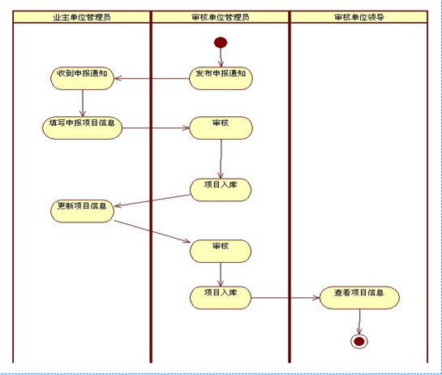
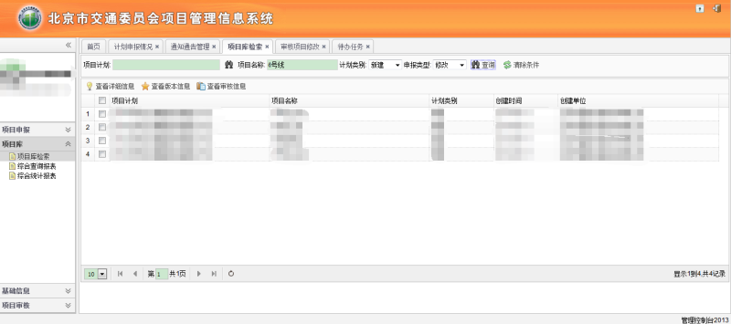
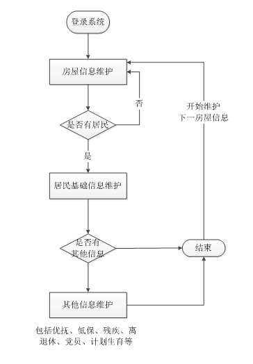
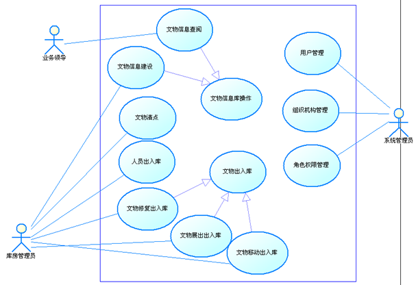

北京市交通委项目信息管理系统，系统模块主要包含信息公告、项目填报、项目审核入库以及已入库数据管理、报表统计。
实现从项目信息的填写、审核、入库全程跟踪管理，并实现项目数据的查询统计报表功能。核心业务的活动图如下：
系统采用当前比较成熟的SSH（Struts2，Spring，Hibernate）框架集。 Struts2进行流程控制，Spring进行业务流转，Hibernate进行数据库操作的封装。
通过Apache的Commons提供的工具类和常用功能的支持提高开发效率和质量。
通过log4j提供日志服务。UI界面使用easyUI+jquery实现，如下
所负责通知通告管理,经办人新建项目申报通知以对申报单位进行下发通知。
项目库管理 包括项目库检索、综合查询报表、综合统计报表。
项目审核管理 审核项目修改、待办任务、当前审核任务查询
丰南网格人口管理系统是唐山市丰南区丰南镇智慧社区网格化社会服务创新平台建设项目的一个子系统，提供房屋和居民信息的录入管理，业务流程如下。
1、登录系统，进入房屋信息维护界面，新增房屋基本信息；
2、房屋信息录入完成后，如果该房屋内有居民，则开始录入居民信息。首先录入户主基础信息，
如果户主还有优抚、低保、残疾、离退休、党员和计划生育等其他信息，则依次录入；户主信息录入完后，录入其他居民基础信息和其他信息；
3、所有该房屋内人员信息录入完成后，关闭。新增下一个房屋信息。
此系统业务功能相对简单，主要是处理一些流程的控制判断和大量数据的维护、查询
居民信息管理、优抚信息管理、离退休干部信息管理、党员信息管理的增删改查以及导出
西城文委文物管理系统 模块主要包括
文物信息管理(对西城区文化委员会现有可移动文物的详细信息建立电子档案) 、
库房管理(实现文物出入库管理，提供工作人员对文物的日常管理和查询功能)、
任务审核(文物清点、文物修复出入库、文物展出出入库、文物移动出入库进行领导审核的功能)、
系统管理(提供系统管理功能，实现用户、组织机构、角色、权限等的灵活管理
标本化石信息、来源信息、考古发掘信息、著录信息、损坏发生记录、修复记录、移动记录